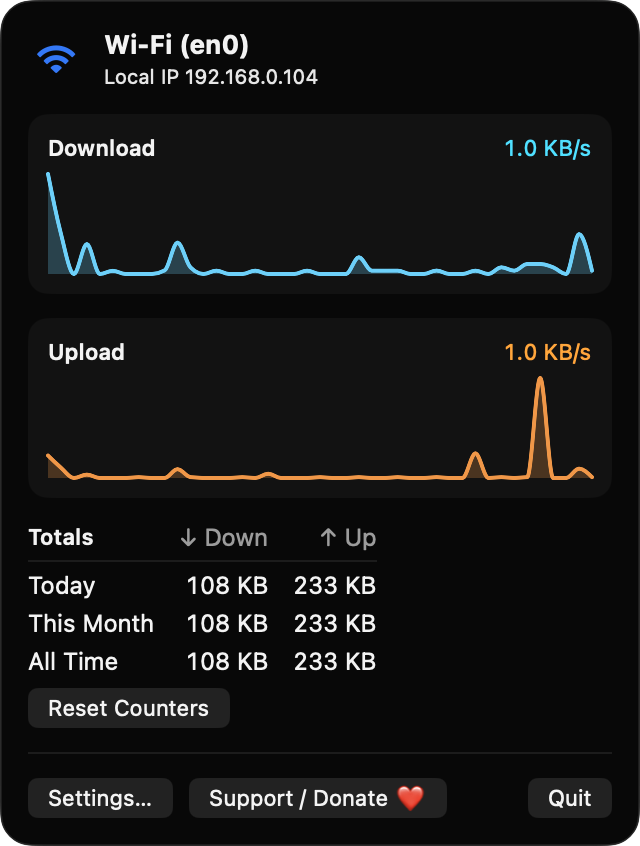
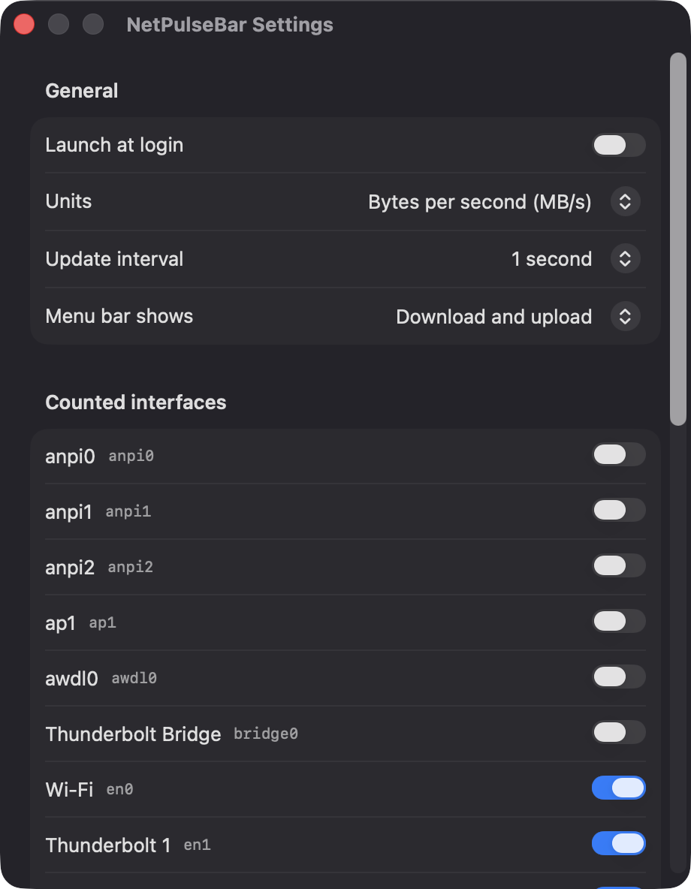
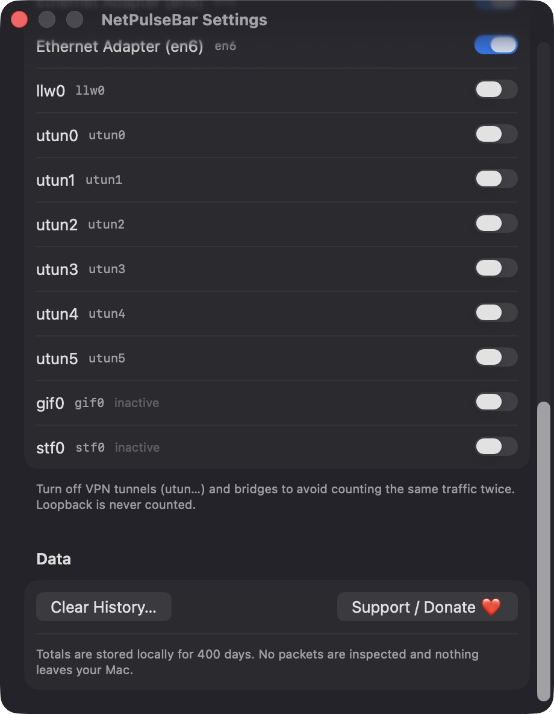

Live speeds in the menu bar
Download and upload rates update every 1, 2 or 5 seconds in a monospaced-digit label that does not jitter. Show both directions, or just one.
Open source · macOS 14+ · Universal binary · System Monitoring
NetPulseBar shows live download and upload rates in your menu bar. Click it for a 60-second graph, your active interface and IP, and usage totals for today, this month and all time.
Free & MIT licensed · Apple Silicon & Intel · Latest release

Features
Everything you need to watch your connection, and nothing that leaves your Mac.
Download and upload rates update every 1, 2 or 5 seconds in a monospaced-digit label that does not jitter. Show both directions, or just one.
Switch between bytes per second and bits per second, and choose whether the menu bar shows download, upload or both.
The popover charts the last 60 seconds for download and upload, and tracks bytes used today, this month and all time with a Reset Counters button.
Wi-Fi, Ethernet and tethering are counted by default. VPN tunnels, bridges and AirDrop links are off to avoid double counting, and you can toggle each one.
See the active interface name, such as Wi-Fi or Ethernet, and your local IPv4 address. The label reads Offline when there is no connection.
Built with Swift, SwiftUI and AppKit with no third-party packages. No packets are inspected and nothing leaves your Mac.
Screenshots


Install
NetPulseBar is open source and not notarized with a paid Apple Developer ID, so macOS needs one extra step the first time.
xattr -cr /Applications/NetPulseBar.app
Download
Free, forever. Built for macOS 14 Sonoma or newer, Apple Silicon and Intel.
Not notarized: on first launch right-click NetPulseBar.app → Open.
FAQ
Yes. It is free to use and released under the MIT license, with the full source on GitHub. If it is useful to you, there is an optional Support button that links to Ko-fi.
None. It reads interface byte counters, watches connectivity and looks up interface names without any privacy prompt. The only system interaction is the optional Launch at login toggle, which macOS may ask you to approve in Login Items.
Daily totals are saved as JSON at ~/Library/Application Support/NetPulseBar/usage.json and kept for 400 days. Nothing is sent anywhere, and the Clear History button in Settings deletes it.
Notarization requires a paid Apple Developer account, which this free project does not have. Right-click the app and choose Open once to launch it, or build it yourself from source with Xcode and XcodeGen.
Support ❤️
NetPulseBar is a free, open-source alternative to paid utilities. If it earns a spot on your Mac, a coffee keeps the updates coming.
☕ Support Or on Ko-fi